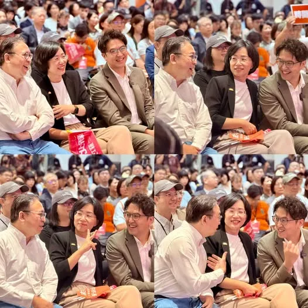
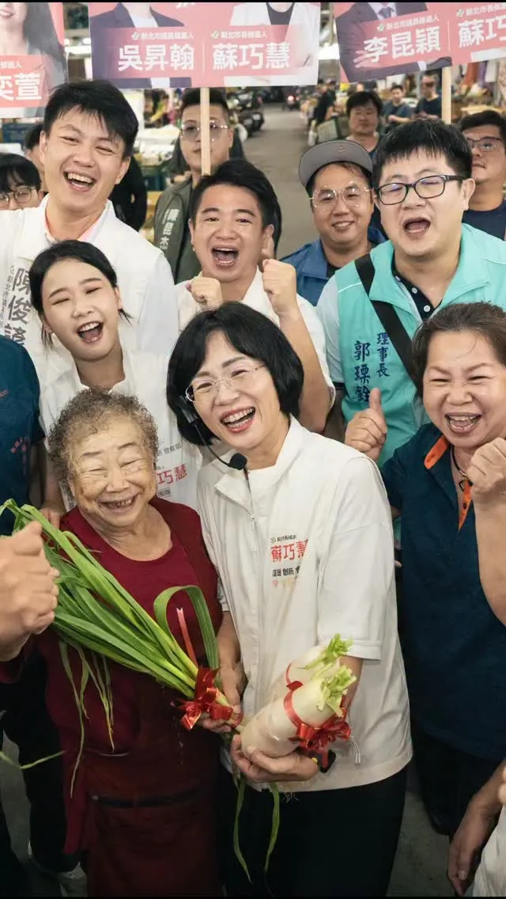
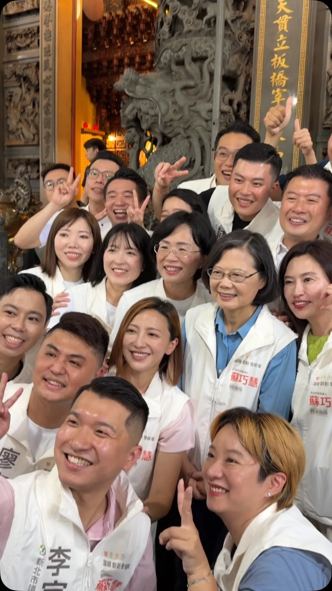
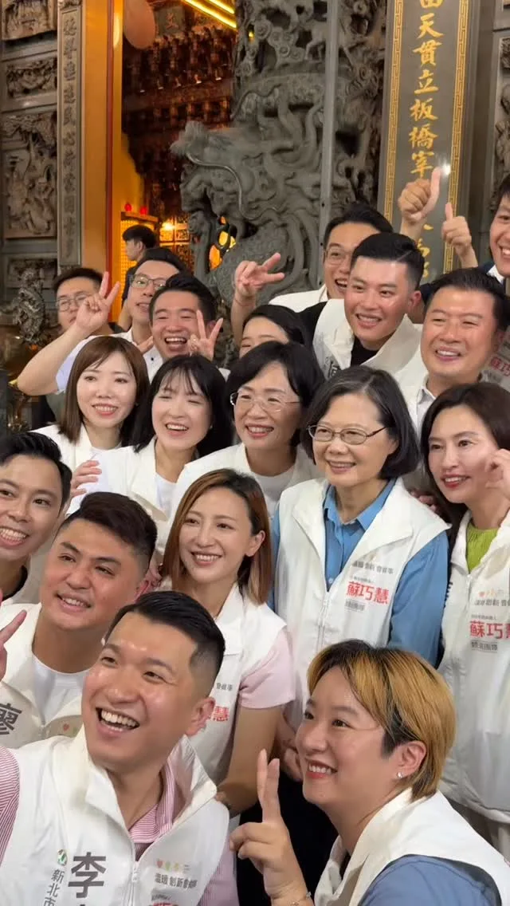
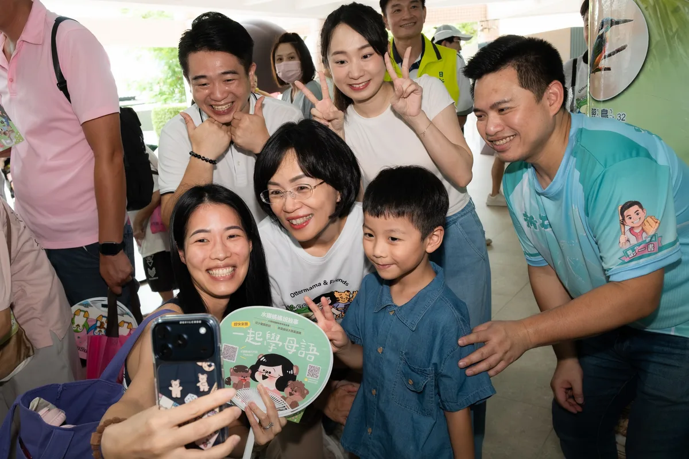
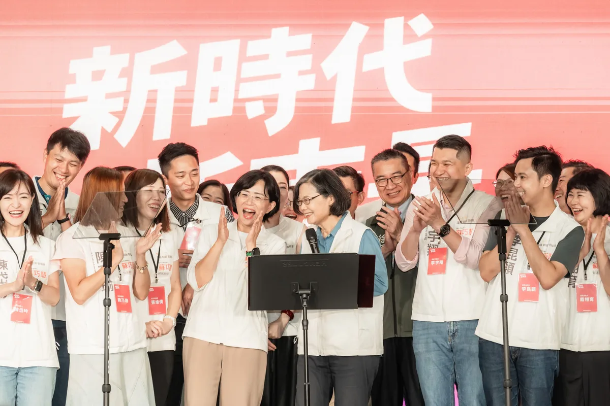
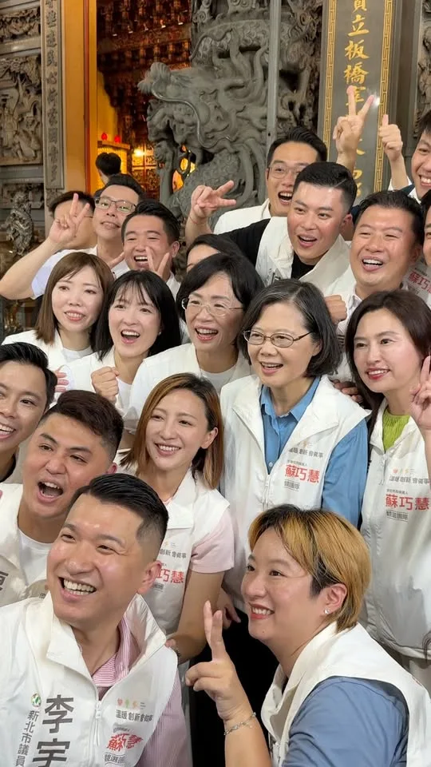

蘇巧慧su.chiaohui

@su.chiaohui:牙醫界挺巧慧！非常感謝 @taipeishihchung 陳時中政委、@wen_shih_cheng 温世政南投縣長候選人，還有數百位牙醫、牙技、牙材產業好朋友站出來支持我！ 這麼多年來，我們一起在立法院支持醫界，守護國人健康。未來，我也要繼續和大家並肩努力，擴大照顧市民的口腔健康❤️
Accounts
| 平台 | 帳號 | 已收錄貼文 | 最後更新 |
|---|---|---|---|
| 官網 | https://chiao.tw/ | 10 | 2026-08-16 00:00 |
| https://www.facebook.com/chiaohui.su | 80 | 2026-08-23 10:14 | |
| https://www.instagram.com/su.chiaohui/ | 85 | 2026-08-23 10:34 | |
| YouTube | https://www.youtube.com/channel/UCBybqVtDU2YgADc8tBqUz5A | 58 | 2026-08-22 12:00 |
| LINE 官方帳號 | http://line.me/ti/p/%40suchiaohui | 0 | — |
| Threads | https://www.threads.com/@su.chiaohui | 116 | 2026-08-23 22:34 |
| Podcast | https://open.spotify.com/show/06fXdjNXspAe1QLML8EsAv | 4 | 2026-08-20 15:00 |
Timeline
顯示 353 / 353 則
@su.chiaohui:牙醫界挺巧慧！非常感謝 @taipeishihchung 陳時中政委、@wen_shih_cheng 温世政南投縣長候選人，還有數百位牙醫、牙技、牙材產業好朋友站出來支持我！ 這麼多年來，我們一起在立法院支持醫界，守護國人健康。未來，我也要繼續和大家並肩努力，擴大照顧市民的口腔健康❤️

嘉義人挺自己人！新北、嘉義一起升級！ 非常感謝昨天 #翁章梁 縣長、#蔡易餘 縣長候選人、#陳冠廷 委員特別北上到新北給我支持，更感謝劉德宗理事長、李少桓名譽理事長、張傳為名譽理事長、蔡政廷副理事長、林家瑩副理事長率領各區嘉義同鄉會的幹部和破千名的鄉親一起來相挺巧慧！ 昨天我在現場和大家分享陳澄波先生的兩幅畫作：〈嘉義街景〉、〈濤聲〉，我們特別取得基金會的授權，讓兩幅畫在現場相遇。而這兩幅畫放在一起，其實就是一條從嘉義走到新北的路。 從80多年前的嘉義畫家陳澄波，到今天每一位從嘉義到新北落地深根、打拚生活的嘉義鄉親，因為有一代代團結的嘉義人，才推動了新北這座城市的進步。 我和未來的蔡易餘縣長也在共同討論後提出，我將推動新北和嘉義的 #AI產業 和 #技職人才 的串連和交流，帶動兩座城市的科技產業持續進步，也會在新北舉辦「嘉義日」，把最優質的嘉義農特產品，推薦給更多新北人認識。 最後階段，我們一起繼續衝，帶領新北、嘉義迎接新時代！

暑假七場 #水獺媽媽樂園 圓滿成功！我們萬聖節再見🧡 今天我們在土城舉辦了今年暑假最後一場「水獺媽媽樂園」，水獺媽媽我真的很高興，從板橋、林口、淡水、汐止、鶯歌、中和到土城，每一場都有上千組的親子家庭和我們一起學習、一起玩。 我也和大家分享，未來我們還要舉辦「萬聖節特別場」！🧚♀️🧛🎃 創立「#水獺媽媽巧巧話」Podcast頻道六年多以來，我希望透過故事，陪伴孩子快樂成長，也給平時辛苦照顧孩子的家長放鬆與喘息的空間。 今年暑假，我們特別設計寓教於樂的闖關活動，引導孩子一步步練習 #防災準備、#環境保護、#資訊識讀，也更 #認識自己和新北。 「做中玩、玩中學」就是水獺媽媽樂園的精神，未來我們會繼續推出更多兼具創意與教育意義的親子活動，希望讓新北變得更有趣、更好玩！

[Otter Mama’s Little Chats] My Mom Is the Real Superhero | Parent-Child Bonding | Heartwarming & ...

誰想得到，20年前我和兩位法律系學弟，20年後會一起成為市長候選人🤣

@su.chiaohui:水獺媽媽樂園雙和場大成功🎉 暑假最後一場就在土城！明天千萬別錯過囉！ 📍水獺媽媽樂園 土城場 時間｜8/22（六）09:00-16:00 地點｜樂利國小樂利廣場（土城區裕生路65號）

❤️巧慧貼心顧長輩！政見一次看！ 新北市有超過82萬的長者人口，因此照顧長輩，是我擔任新北市長最重要的工作之一，未來我會重點推動： ✅ #敬老卡每月1000點，可以搭公車、買東西，生活更便利。 ✅ 長輩 #假牙補助最高5萬元，有好的牙口吃飯，身體更健康。 ✅ 入住住宿式長照機構補助提升至 #每年24萬元，為家庭減負擔。 ✅ 簡化機構與照顧者行政負擔，讓照顧者能把精力留在專業發揮上。 ✅ 出院後居家服務和輔具 #一次到位，同時帶入專業復能，確保照顧不中斷。 ✅ 發展 #AI智慧照顧，減輕照顧人力負擔，並建立以租代買 平台，降低導入門檻。 未來，我不但會推動長輩福利、提高長照量能與補助，也會以新觀念成為「照顧者的照顧者」，讓新北長輩安心生活，也實質為家庭、照顧者減輕負擔，打造更溫暖的長照環境！

選前99天，清晨四點半出發！感謝板橋果菜市場好朋友們的熱情加油🎉 新北隊一起團結繼續衝！
倒數100天！#小英總統 親自領軍，新北隊全力衝！ 16年前，也曾經是新北市長候選人的小英總統，在任8年帶領台灣走向世界，#賴清德總統 接棒後讓台灣更加茁壯。如今小英總統成為我們的競選總部主任委員，再次和新北隊集結，她和大家分享「16年後，我們更強了！」 過去700多天，我們扎扎實實的勤跑新北29區，和議員舉辦超過40場地方座談會，市場掃街即將邁入第50場。最後100天，我們會拚盡全力，拿出一百二十分的努力，握到每一雙手，新北隊一起衝！2026、新北會贏！

小英總統、蘇巧慧競選總部主委，也穿上我們最新的新北隊戰袍！2026、新北會贏！ 最後一百天全力衝！！

@su.chiaohui:@tsai_ingwen 小英總統：「看一個政治人物值不值得信任，不只要看她順利的時候說什麼，更要看別人遇到困難的時候，她願不願意站在你那邊，這就是我認識的蘇巧慧。」 感謝小英總統的加持，我們從一開始不被看好，一步一步走到現在，不只已經平手，更有機會贏得勝利。 我也在這段時間負責任的提出城市願景，從區域均衡、產業升級，到育兒、教育、長照、交通，以及新皇冠海岸、鑽石山城等政見。 我們會帶著大家的期待，讓這座城市越來越有希望，讓這座城市進步的速度越來越快！一起出發，迎向勝利！2026新北慧贏！

嘉義人挺自己人！新北、嘉義一起升級！ 非常感謝昨天 翁章梁 Weng Chang-Liang縣長、蔡易餘 家己人縣長候選人、陳冠廷 Kuan-Ting Chen委員特別北上到新北給我支持，更感謝 #劉德宗 理事長、#李少桓 名譽理事長、#張傳為 名譽理事長、#蔡政廷 副理事長、#林家瑩 副理事長 率領各區嘉義同鄉會的幹部和破千名的鄉親一起來相挺巧慧！ 昨天我在現場和大家分享陳澄波先生的兩幅畫作：〈嘉義街景〉、〈濤聲〉，我們特別取得基金會的授權，讓兩幅畫在現場相遇。而這兩幅畫放在一起，其實就是一條從嘉義走到新北的路。 從80多年前的嘉義畫家陳澄波，到今天每一位從嘉義到新北落地深根、打拚生活的嘉義鄉親，因為有一代代團結的嘉義人，才推動了新北這座城市的進步。 我和未來的蔡易餘縣長也在共同討論後提出，我將推動新北和嘉義的 #AI產業 和 #技職人才 的串連和交流，帶動兩座城市的科技產業持續進步，也會在新北舉辦 #嘉義日，把最優質的嘉義農特產品，推薦給更多新北人認識。 最後階段，我們一起繼續衝，帶領新北、嘉義迎接新時代！

@su.chiaohui:暑假七場「水獺媽媽樂園」圓滿成功！我們萬聖節再見🧡 今天我們在土城舉辦了今年暑假最後一場「水獺媽媽樂園」，水獺媽媽我真的很高興，從板橋、林口、淡水、汐止、鶯歌、中和到土城，每一場都有上千組的親子家庭和我們一起學習、一起玩。 我也和大家分享，未來我們還要舉辦「萬聖節特別場」！🧚♀️🧛🎃 「做中玩、玩中學」就是水獺媽媽樂園的精神，未來我們會繼續推出更多兼具創意與教育意義的親子活動，希望讓新北變得更有趣、更好玩！

@su.chiaohui:誰想得到，20年前我和 @pumashen @schuanglawyer 兩位法律系學弟，20年後會一起成為市長候選人🤣

上千組親子一起玩！#水獺媽媽樂園 雙和場大成功🎉 現場不只有好玩的遊戲，這次我們特別邀請 義興閣掌中劇團，將傳統布袋戲結合搖滾音樂，用新潮又有趣的方式演出台灣的在地文化，讓大小朋友看得目不轉睛，笑聲不斷！還有許多有趣的互動關卡，讓孩子邊玩邊學台語、瞭解知識，更帶著滿滿的收穫和快樂回家！ 暑假最後一場就在土城！還沒來過的大小朋友，千萬別錯過囉！ 📍水獺媽媽樂園 土城場 時間｜8/22（六）09:00-16:00 地點｜樂利國小樂利廣場（土城區裕生路65號）

上千組親子一起玩！#水獺媽媽樂園 雙和場大成功🎉 現場不只有好玩的遊戲，這次我們特別邀請 @yisingkuo 義興閣掌中劇團，將傳統布袋戲結合搖滾音樂，用新潮又有趣的方式演出台灣的在地文化，讓大小朋友看得目不轉睛，笑聲不斷！還有許多有趣的互動關卡，讓孩子邊玩邊學台語、瞭解知識，更帶著滿滿的收穫和快樂回家！ 暑假最後一場就在土城！還沒來過的大小朋友，千萬別錯過囉！ 📍水獺媽媽樂園 土城場 時間｜8/22（六）09:00-16:00 地點｜樂利國小樂利廣場（土城區裕生路65號）

❤️巧慧貼心顧長輩！政見一次看！ 新北市有超過82萬的長者人口，因此照顧長輩，是我擔任新北市長最重要的工作之一，未來我會重點推動： ✅ #敬老卡每月1000點，可以搭公車、買東西，生活更便利。 ✅ 長輩 #假牙補助最高5萬元，有好的牙口吃飯，身體更健康。 ✅ 入住住宿式長照機構補助提升至 #每年24萬元，為家庭減負擔。 ✅ 簡化機構與照顧者行政負擔，讓照顧者能把精力留在專業發揮上。 ✅ 出院後居家服務和輔具 #一次到位，同時帶入 #專業復能，確保照顧不中斷。 ✅ 發展 #AI智慧照顧，減輕照顧人力負擔，並建立 #以租代買 平台，降低導入門檻。 未來，我不但會推動長輩福利、提高長照量能與補助，也會以新觀念成為「照顧者的照顧者」，讓新北長輩安心生活，也實質為家庭、照顧者減輕負擔，打造更溫暖的長照環境！
選前99天，清晨四點半出發！感謝板橋果菜市場好朋友們的熱情加油🎉 新北隊一起團結繼續衝！
倒數100天！蔡英文 Tsai Ing-wen小英總統親自領軍，新北隊全力衝！ 16年前，也曾經是新北市長候選人的小英總統，在任8年帶領台灣走向世界，賴清德總統接棒後讓台灣更加茁壯。如今小英總統成為我們的競選總部主任委員，再次和新北隊集結，她和大家分享「16年後，我們更強了！」 過去700多天，我們扎扎實實的勤跑新北29區，和議員舉辦超過40場地方座談會，市場掃街即將邁入第50場。最後100天，我們會拚盡全力，拿出一百二十分的努力，握到每一雙手，新北隊一起衝！2026、新北會贏！

@su.chiaohui:@tsai_ingwen 小英總統、蘇巧慧競選總部主委，也穿上我們最新的新北隊戰袍！2026、新北會贏！ 最後一百天全力衝！！

@su.chiaohui:嘉義人挺自己人！新北、嘉義一起升級！
@su.chiaohui:TVBS專訪新北市長候選人蘇巧慧 第一次聽到有人用辦活動來紓壓？？？ ✨「水獺媽媽樂園」把知識融入遊戲，讓孩子邊玩邊學！ ✨手遊「皮克敏」紀錄巧慧努力跑行程的痕跡，讓新北29區都開滿花朵！ ✨巧慧要讓新北各區的特色被更多人看見，讓住在新北的大家，都能為這座城市感到驕傲！ 觀看連結🔗 https://youtu.be/bkEJHtAepS0?si=QXXVnNCar7x4IGlw

暑假七場 #水獺媽媽樂園 圓滿成功！我們萬聖節再見🧡 今天我們在土城舉辦了今年暑假最後一場「水獺媽媽樂園」，水獺媽媽我真的很高興，從板橋、林口、淡水、汐止、鶯歌、中和到土城，每一場都有上千組的親子家庭和我們一起學習、一起玩。 我也和大家分享，未來我們還要舉辦「萬聖節特別場」！🧚♀️🧛🎃 創立「#水獺媽媽巧巧話」Podcast頻道六年多以來，我希望透過故事，陪伴孩子快樂成長，也給平時辛苦照顧孩子的家長放鬆與喘息的空間。 今年暑假，我們特別設計寓教於樂的闖關活動，引導孩子一步步練習 #防災準備、#環境保護、#資訊識讀，也更認識自己和新北。 「做中玩、玩中學」就是水獺媽媽樂園的精神，未來我們會繼續推出更多兼具創意與教育意義的親子活動，希望讓新北變得更有趣、更好玩！

誰想得到，20年前我和兩位法律系學弟，20年後會一起成為市長候選人🤣

The Most Fun Otter Mom's Paradise for Summer Break: Last Session Tomorrow (8/22), See You in Tuch...

@su.chiaohui:❤️巧慧貼心顧長輩！政見一次看！ 新北市有超過82萬的長者人口，因此照顧長輩，是我擔任新北市長最重要的工作之一。 未來，我不但會推動長輩福利、提高長照量能與補助，也會以新觀念成為「照顧者的照顧者」，讓新北長輩安心生活，也實質為家庭、照顧者減輕負擔，打造更溫暖的長照環境！
@su.chiaohui:選前99天，清晨四點半出發！感謝板橋果菜市場好朋友們的熱情加油🎉 新北隊一起團結繼續衝！

@su.chiaohui:倒數100天！@tsai_ingwen 小英總統親自領軍，新北隊全力衝！ 16年前，也曾經是新北市長候選人的小英總統，在任8年帶領台灣走向世界，@william_chingte 賴清德總統接棒後讓台灣更加茁壯。如今小英總統成為我們的競選總部主任委員，再次和新北隊集結，她和大家分享「16年後，我們更強了！」 過去700多天，我們扎扎實實的勤跑新北29區，和議員舉辦超過40場地方座談會，市場掃街即將邁入第50場。最後100天，我們會拚盡全力，拿出一百二十分的努力，握到每一雙手，新北隊一起衝！2026、新北會贏！

蔡英文 Tsai Ing-wen 小英總統、蘇巧慧競選總部主委，也穿上我們最新的新北隊戰袍！2026、新北會贏！ 最後一百天全力衝！！
【每位爸爸媽媽在小朋友的心目中，都是很厲害的大人】 適讀年齡：4~8歲以上 ✏️ 本集台語小教室蓋棉被、洗衣服、打掃、發脾氣 📔《我的媽媽才是超級英雄》文、圖 / 卡特琳娜‧高斯曼‧漢瑟爾 這個禮拜日就是母親節了。保羅和瑪塔在學校一邊畫著母親節卡片，一邊驕傲地稱讚自己的媽媽最完美！到底，誰的媽媽才是最厲害的超級英雄呢？ 故事由水滴文化授權使用 👇 繪本這裡看：https://www.books.com.tw/products/0010985074? 👇 更多親子大小事，請在 FB 搜尋： 水獺媽媽巧慧與她的小夥伴 https://www.facebook.com/ottermamachiao 👇 寫信給水獺媽媽：100925 立法院郵局 第 27 號信箱 水獺媽媽收